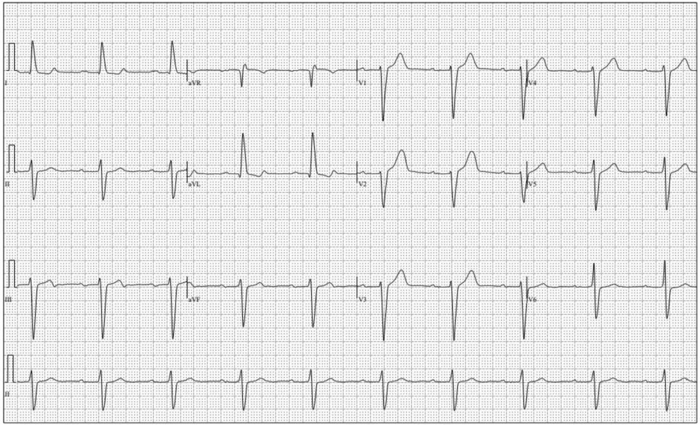
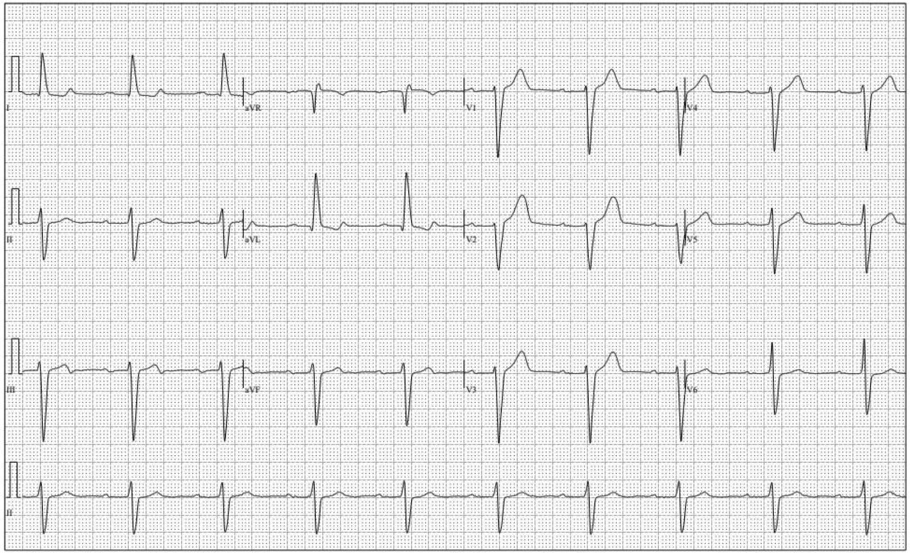
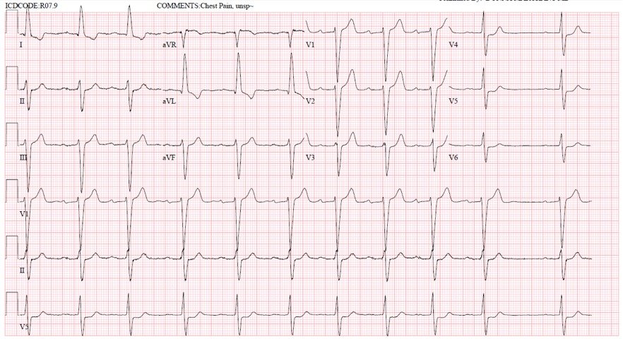
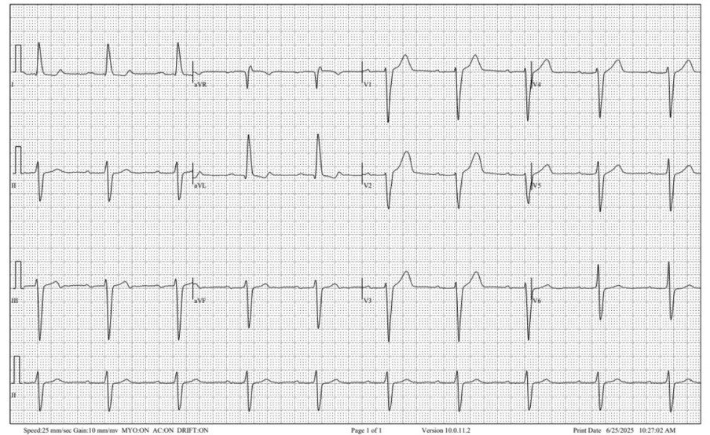
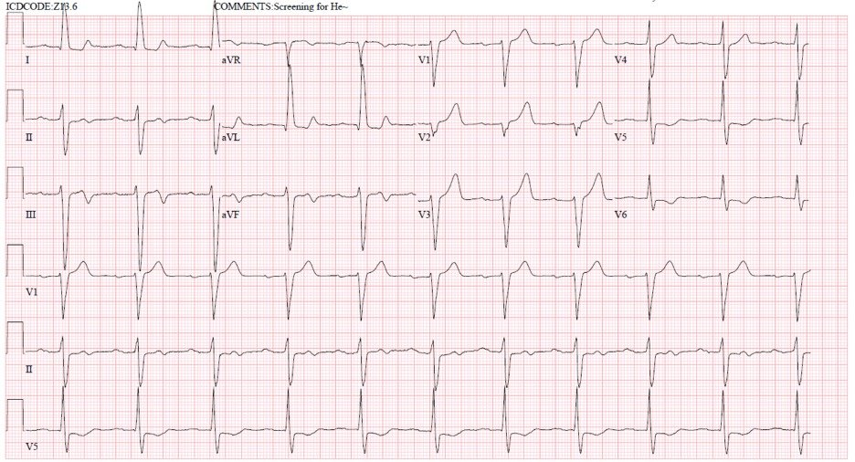
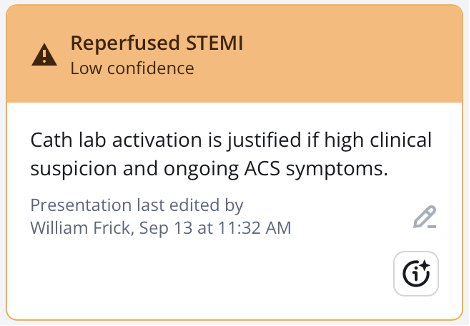
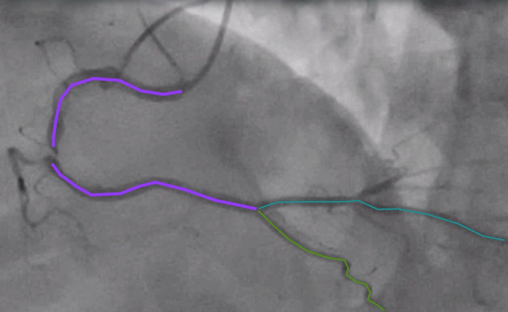
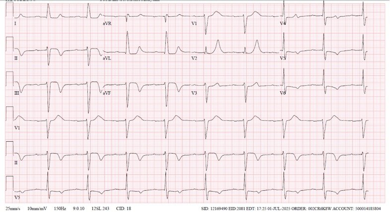
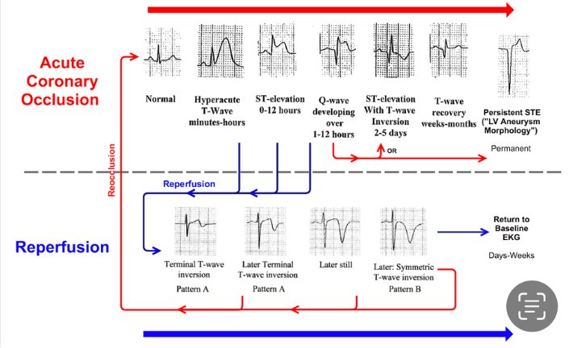
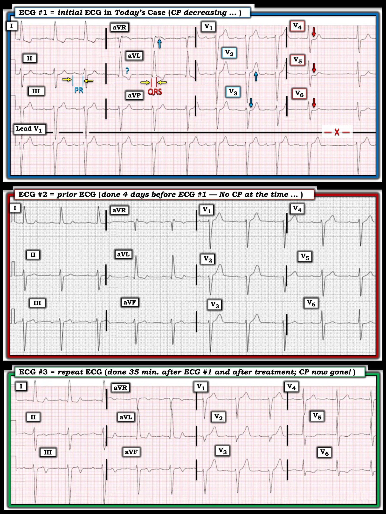

09/01/2026 — Điện tâm đồ ghi 4 ngày trước (tại phòng khám) cho chúng ta biết gì về các điện tâm đồ ở khoa cấp cứu?
Bản dịch tiếng Việt của bài "What does this ECG recorded 4 days prior (in clinic) tell us about the ECGs in the ED?" – Dr. Smith’s ECG Blog. Giữ nguyên toàn bộ 9 hình ảnh và 2 video của bản gốc.


Gửi bởi Evan (Kuan-Yu) Lin, biên tập bởi Willy Frick
Điện tâm đồ này đã được ghi tại phòng khám tim mạch:


Bạn nghĩ gì?
Đây là ca bệnh:
Một nam giới 84 tuổi có tăng huyết áp, rối loạn lipid máu, phản ứng dạng lichen (lichenoid reaction) với losartan, đến khoa cấp cứu (ED) vì đau ngực làm bệnh nhân thức giấc lúc 2:30 sáng. Bệnh nhân kể ông thức dậy đi vệ sinh và bắt đầu thấy đau ngực sau xương ức lệch trái, lan sang trái và sang phải cũng như xuống vùng thượng vị, kèm khó thở. Cơn đau không dứt, được mô tả kiểu đè ép, mức 8/10, khiến vợ ông phải chở ông đến khoa cấp cứu. Bệnh nhân cho biết chưa bao giờ có cơn nào như vậy trước đây. Cơn đau kéo dài cho đến khi ông tới bệnh viện vào khoảng ~5 giờ sáng. Tại khoa cấp cứu, dấu hiệu sinh tồn lúc vào ban đầu cho thấy tăng huyết áp 160/80. Bệnh nhân cho biết đau ngực bắt đầu giảm khi ông đến khoa cấp cứu và hết hoàn toàn sau khi được dùng nitroglycerin, ASA 325 mg, clopidogrel 600 mg và truyền nhỏ giọt heparin.
Bệnh nhân chưa bao giờ hút thuốc. Theo lời người vợ ở bên giường, bệnh nhân uống thuốc rất đều đặn nhưng gần đây đã được bác sĩ da liễu ngoại trú cho ngừng losartan vì họ xác định thuốc chẹn thụ thể angiotensin (ARB) là thủ phạm chính gây phản ứng dạng lichen.
Phản ứng dạng lichen: cơ chế bệnh sinh liên quan đến đáp ứng miễn dịch qua trung gian tế bào T gây độc, nhắm vào các tế bào sừng lớp đáy, thường được khởi phát bởi thuốc, nhiễm trùng hoặc dị nguyên tiếp xúc.
Với bất kỳ bệnh nhân nào đến viện vì đau ngực và khó thở, hội chứng vành cấp (ACS), thuyên tắc phổi (PE), bóc tách động mạch chủ và tràn khí màng phổi là những chẩn đoán không được bỏ sót.
X-quang ngực, CT tìm PE và CT bụng – chậu của bệnh nhân không có phát hiện cấp tính. Có một ổ loét xơ vữa xuyên thành động mạch chủ ở ngang mức thận, phình hai động mạch chậu chung hai bên, nhiều khả năng thứ phát do tăng huyết áp và rối loạn lipid máu mạn tính. Troponin T độ nhạy cao (hsTnT) đầu tiên lúc 0609 là 21 ng/L (bình thường). [giới hạn trên tham chiếu (URL) là 14 ng/L ở nữ và 22 ng/L ở nam)
Điện tâm đồ 1 lúc vào viện, khi đau ngực đang giảm, lúc 5:18 sáng


Bạn nghĩ gì?
Smith (tương tự diễn giải của Willy bên dưới): Có điện thế cao và chậm dẫn truyền trong thất (IVCD). Có ST chênh xuống kiểu thiếu máu cục bộ kín đáo ở V3-V6, và nó cũng đồng hướng với sóng S sâu, rộng ở V3, và với sóng S ít sâu hơn nhưng vẫn rộng ở V4-6. ST chênh xuống ở I và aVL có dáng vẻ không do thiếu máu cục bộ, điển hình của bất thường tái cực do LVH (hoặc IVCD).
ST chênh xuống ở V3-6 này có giá trị chẩn đoán thiếu máu cục bộ. Vì không có dấu hiệu OMI, chúng tôi sẽ xếp đây là thiếu máu cục bộ dưới nội tâm mạc (SEI).
Queen of Hearts cho kết quả âm tính với OMI.
Smith: Tôi đã chạy bản ghi này qua mô hình AI mới nhất của chúng tôi (người khác chưa dùng được) và Queen of Hearts chẩn đoán SEI (giá trị mô hình = 0,599). Nếu so với điện tâm đồ ở phòng khám, có hiện tượng giả bình thường hóa (pseudonormalization) sóng T rõ ràng ở III và aVF.
Willy: Trong bối cảnh đau ngực nguy cơ cao, đây là một điện tâm đồ đáng lo ngại. Có những đặc điểm của LVH (sóng R ở aVL), nên rất dễ bị cám dỗ gạt bỏ các thay đổi tái cực ở thành bên vì cho rằng đó là tăng gánh. Tuy nhiên, hình ảnh tăng gánh do LVH điển hình có đặc điểm là ST chênh xuống và sóng T đảo ngược ở các chuyển đạo dưới-bên. Điều này có thể giải thích I và aVL, nhưng ST chênh xuống (STD) ở các chuyển đạo trước tim bên ở đây lại đi kèm sóng T dương bất thường. Hơn nữa, hình ảnh “tăng gánh” do LVH không gây STD ở V3; nó thường chỉ giới hạn ở các chuyển đạo trước tim bên (Smith: và STD do LVH không đồng hướng với phần lớn QRS).
Tất cả những điều này có khẳng định là OMI không? Không, đó có thể là thiếu máu cục bộ dưới nội tâm mạc. Nhưng vì đau ngực của bệnh nhân đang giảm khi ghi điện tâm đồ này, chúng ta phải tự hỏi điện tâm đồ sẽ cho thấy gì 20 phút trước khi bệnh nhân đến viện.
Bất kể điện tâm đồ thế nào, với người điều trị, bệnh cảnh này cực kỳ đáng lo ngại. Bất kỳ cơn đau ngực nào làm bệnh nhân thức giấc đều phải được xử trí với sự cảnh giác cao nhất, vì xác suất tiền nghiệm rất cao. Cũng cần nhận thức rằng hội chứng vành cấp là một quá trình động — cả về giải phẫu ở mức động mạch vành lẫn về điện học. Vì vậy, một điện tâm đồ chụp tại một thời điểm có thể trông ‘bình thường’ một cách đánh lừa. Như bạn sẽ thấy, ca này làm nổi bật vẻ đẹp tinh tế của việc đọc điện tâm đồ, vốn thường soi sáng sự tiến triển của hội chứng vành cấp, và là minh chứng cho lý do tôi có niềm đam mê sâu sắc đến vậy với điện tâm đồ và tim mạch học.
Để tham chiếu, điện tâm đồ 2 – điện tâm đồ nền chỉ bốn ngày trước tại phòng khám tim mạch. Bệnh nhân đến phòng khám tái khám mà không có bất kỳ triệu chứng tim mạch nào. Không có ghi chép rõ ràng về việc bệnh nhân có bị đau ngực hay không; tuy nhiên, điều thú vị là đã có chỉ định làm nghiệm pháp gắng sức hạt nhân.
Điện tâm đồ 2, ghi bốn ngày trước (chính là bản ở đầu bài!)


Willy: Trong bối cảnh bệnh cảnh hiện tại, điện tâm đồ này cực kỳ đáng ngờ, gần như có giá trị chẩn đoán nhồi máu cơ tim do tắc vùng dưới-sau đã được tái tưới máu. Có phần cuối sóng T đảo ngược ở chuyển đạo III với sóng T soi gương dạng xuống-lên ở I và aVL. Ngoài ra, sóng T ở V1-2 dương quá mức do tái tưới máu thành sau. Đây nhiều khả năng là một tổn thương không ổn định với tắc lại tái diễn và tái tưới máu tự phát. Và có lẽ điều gì đó trong biểu hiện của bệnh nhân tại phòng khám đã khiến bác sĩ tim mạch chỉ định nghiệm pháp gắng sức.
Ca bệnh tiếp diễn:
Điện tâm đồ 3 lúc 5:53 sáng, sau khi dùng nitroglycerin, DAPT và truyền nhỏ giọt heparin


Evan: Có thể nói đây là điện tâm đồ thú vị nhất ở ca này. Điện tâm đồ 3 cho thấy các thay đổi tái tưới máu dạng hai pha thú vị ở vùng dưới VÀ sóng T dương quá mức ở V2-V3. Thú thật, tôi đã không biết về các thay đổi tái tưới máu soi gương ở V2-3.
Đây là điện tâm đồ tôi đã gửi cho Willy. Willy đã cho tôi rất nhiều điểm then chốt (pearl) trong suốt hành trình học tập của tôi, và đây là một ví dụ nữa khi anh chỉ ra rằng sóng T trông đầy đặn ở V2-3 là các thay đổi sóng T tái tưới máu soi gương của tổn thương thành sau. Mặc dù điện tâm đồ lúc vào viện không đặc hiệu, bản thân bệnh sử lúc vào viện đã đáng lo ngại. Như đã nói ở trên, OMI thường có thể biểu hiện với ‘điện tâm đồ bình thường một cách đánh lừa’ (điện tâm đồ 1), vì chúng ta không chắc về thời gian diễn tiến của biến cố ACS. Tuy nhiên, các thay đổi tái tưới máu động gồm sóng T hai pha ở vùng dưới và sóng T dương quá mức ở V2-3 có giá trị chẩn đoán hình ảnh dưới-sau, gợi ý động mạch thủ phạm là RCA.
Queen of Hearts nhận diện đúng đây là hình ảnh tái tưới máu.


Có tái tưới máu động mạch vành nhờ cơ chế tiêu sợi huyết nội sinh của bệnh nhân và nhờ các thuốc kháng tiểu cầu ngăn tiểu cầu ngưng tập thêm. HsTnT như dưới đây phản ánh thêm tình trạng nhồi máu cơ tim:
Lúc 0936: 77 ng/L
Lúc 1445: 309 ng/L
Lúc 1753: 532 ng/L
Ngày hôm sau, lúc 0111: 647 ng/L
Hình chiếu LAO chếch đầu (cranial) của RCA
Ảnh tĩnh có chú thích cho thấy tổn thương nghiêm trọng (với dòng chảy TIMI 3) phù hợp với điện tâm đồ của chúng tôi cho thấy tái tưới máu


Sau PCI RCA
Điện tâm đồ 4 sau PCI


Điện tâm đồ 4: Thêm các dấu hiệu tái tưới máu. Sóng T hai pha nay đã tiến triển thành sóng T đảo ngược sâu.
Kết cục:
Bệnh nhân được PCI thành công vào RCA cho một tổn thương nghiêm trọng với dòng chảy TIMI 3, các động mạch vành còn lại có bệnh mức độ nhẹ-trung bình. Mặc dù tổn thương thủ phạm đã tái tưới máu tự phát, siêu âm tim qua thành ngực (TTE) cho thấy rối loạn vận động thành (WMA) vùng dưới với EF 35-40%. Bệnh nhân được xuất viện với thuốc chẹn beta (BB), thuốc ức chế men chuyển (ACEi), DAPT và rosuvastatin, kèm kế hoạch tái khám ngoại trú vào ngày hôm sau.
Đây là một bảng tóm tắt tuyệt vời về diễn tiến của tái tưới máu:


Những điểm cần học:
- Xác suất tiền nghiệm có thể có trọng lượng hơn một xét nghiệm “âm tính”. Smith: đúng vậy, ngay cả khi đây thực ra không phải là một điện tâm đồ âm tính (nó cho thấy SEI)
- OMI có thể biểu hiện với điện tâm đồ rất không ấn tượng, hoặc hiếm khi thậm chí là điện tâm đồ bình thường
- Troponin ban đầu có thể bình thường trong ACS
- Bạn phải luôn ghi các điện tâm đồ liên tiếp cùng với xét nghiệm troponin liên tiếp
- Nhận ra bản chất động của các dấu hiệu tái tưới máu
- Sóng T hai pha ngày càng âm hơn khi có tái tưới máu
- Sóng T dương quá mức ở V2-3 là hình soi gương của sóng T đảo ngược ở thành sau. Smith là người đầu tiên mô tả chúng và chứng minh ý nghĩa của chúng: Posterior reperfusion T-waves: Wellens’ syndrome of the posterior wall.
- Đây là thêm vài ví dụ về sóng T tái tưới máu thành sau: 2 Examples of Posterior Reperfusion T-waves
= = =
======================================
BÌNH LUẬN CỦA TÔI, bởi KEN GRAUER, MD (9/1/2026):
Thú nhận: Tôi hoàn toàn thừa nhận rằng ban đầu tôi đã không nhìn thấy tất cả các dấu hiệu điện tâm đồ mà tôi mô tả dưới đây trên điện tâm đồ ban đầu của ca hôm nay. Thỉnh thoảng bị làm cho khiêm tốn lại là điều tốt — vì tôi tin rằng điều này là một lời nhắc nhở tuyệt vời để luôn cần mẫn, không chỉ với các chi tiết trên mỗi điện tâm đồ — mà còn là lời nhắc nhở hãy hồi cứu, quay lại và xem lại các diễn giải của bạn sau khi bạn biết điều gì đã xảy ra (và sau khi bạn thấy các điện tâm đồ liên tiếp đã tiến triển ra sao).
- Đây thực sự là một ca khó và quan trọng.
- Thiếu sót chính của tôi = không chú ý đủ đến bệnh sử. vào lúc tôi đánh giá điện tâm đồ ban đầu.
Về Bệnh sử trong ca hôm nay:
- Bệnh nhân là một người đàn ông lớn tuổi (84 tuổi) — bị đánh thức khỏi giấc ngủ bởi cơn CP không dứt (Chest Pain – đau ngực) mà ông đánh giá mức độ nặng 8/10 — và là cơn ông chưa bao giờ bị trước đây.
- Vợ bệnh nhân chở ông đến khoa cấp cứu — với CP đang giảm khi đến khoa cấp cứu. CP đã hoàn toàn biến mất 35 phút sau đó (tức là, vào thời điểm bản ghi lại điện tâm đồ được thực hiện).
Điểm MẤU CHỐT: Tôi đã nhận ra rằng CP mới khởi phát ở một người đàn ông lớn tuổi lập tức xếp ông vào nhóm nguy cơ cao hơn có một biến cố cấp mới. Nhưng do vội vàng — tôi đã không xét đầy đủ việc triệu chứng của bệnh nhân tự cải thiện trước khi ông đến khoa cấp cứu (và do đó trước khi điện tâm đồ ban đầu được ghi) — và điều này cần thay đổi kỳ vọng của chúng ta về những gì điện tâm đồ ban đầu có thể cho thấy ra sao!
- Sự cải thiện đáng kể về mức độ CP thường báo hiệu sự khởi đầu của quá trình tự tái thông của mạch “thủ phạm” (tức là, khởi đầu của tái tưới máu tự phát).
- Do đó — các dấu hiệu trên điện tâm đồ ban đầu có thể chỉ khiêm tốn. Và nếu thời điểm ghi điện tâm đồ ban đầu tình cờ rơi đúng vào khoảng giữa ST chênh lên cấp và sóng T đảo ngược do tái tưới máu tự phát — thì điện tâm đồ ban đầu có thể trông bình thường một cách đáng ngạc nhiên ( = giai đoạn “giả bình thường hóa”). Vì vậy — ngay cả những bất thường ST-T tối thiểu cũng có thể quan trọng!
= = =
Điện tâm đồ ban đầu của ca hôm nay:
Để rõ ràng và dễ so sánh, trong Hình 1 — tôi đã đặt 3 điện tâm đồ đầu tiên của ca hôm nay cạnh nhau. Tôi đã đánh dấu các dấu hiệu điện tâm đồ đáng chú ý trên điện tâm đồ ban đầu.
- Cơ chế của nhịp (như thấy trên dải nhịp chuyển đạo V1 dài ở cuối điện tâm đồ #1) — là nhịp xoang. Dù vậy — khoảng R-R thay đổi từ nhát này sang nhát khác, với sự chậm lại đột ngột trước nhát cuối (khoảng R-R dài hơn dự kiến này được đánh dấu bằng chữ “X” ở cuối bản ghi). Tôi diễn giải đây là loạn nhịp xoang — không có dấu hiệu nào cho thấy blốc AV hay PAC bị blốc là nguyên nhân gây chậm xoang. Thay vào đó — tôi cho rằng sự thay đổi khoảng R-R giữa các nhát cùng với sự chậm lại đáng ngạc nhiên ở cuối dải nhịp gợi ý tăng trương lực phế vị (điều này có thể có liên quan trong ca hôm nay xét theo chẩn đoán cuối cùng).
Về các khoảng (PR-QRS-QTc):
- Khoảng PR bị kéo dài (gần 1,5 ô lớn — tức là chỉ dưới 0,30 giây). Vậy có blốc AV độ 1 (Xem phép đo khoảng PR của tôi ở chuyển đạo II của điện tâm đồ #1).
- Phức bộ QRS rộng ( = ít nhất 0,13 giây về thời gian — theo phép đo QRS của tôi ở chuyển đạo aVL của điện tâm đồ #1). Điều này có liên quan đến ca hôm nay — vì việc đánh giá điện tâm đồ tìm các thay đổi ST-T cấp trở nên khó hơn khi có rối loạn dẫn truyền trong thất.
- QTc trông bình thường.
- Hình dạng QRS phù hợp với LAHB (blốc phân nhánh trái trước – Left Anterior HemiBlock) — do có dạng qR ở các chuyển đạo I,aVL và dạng rS với phần âm chiếm ưu thế ở tất cả các chuyển đạo dưới.
- Sóng R rất cao ở chuyển đạo aVL ≥12 mm (cũng như sóng S sâu ở các chuyển đạo V1,V2) gợi ý LVH. Dù vậy, ngay cả khi có cả LAHB lẫn LVH — chúng ta thường không dự kiến QRS giãn rộng đến mức như thấy ở điện tâm đồ #1 (Thông thường LAHB và LVH làm tăng thời gian QRS không quá 0,015 giây). Điều này gợi ý có lẽ đang có một dạng IVCD nào đó, ở đây với trục lệch trái (tức là, IVCD khiến việc diễn giải các thay đổi ST-T cấp trở nên khó khăn hơn).
Về các thay đổi ST-T:
- “Mắt” tôi bị thu hút bởi đoạn ST dẹt và ST chênh xuống nhẹ-nhưng-có-thật, kín đáo nhưng không thể nhầm lẫn ở các chuyển đạo V4,V5,V6 (các mũi tên ĐỎ ở những chuyển đạo này). Ở một người lớn tuổi có CP nặng mới khởi phát — không thể nào dấu hiệu này ở các chuyển đạo trước tim bên lại là “bình thường”.
- Trong bối cảnh những gì thấy ở V4,V5,V6 — chuyển đạo lân cận V3 cũng bất thường (mũi tên XANH ở chuyển đạo này làm nổi bật việc mất đi ST chênh lên nhẹ bình thường vẫn thường thấy ở chuyển đạo V3).
- Mặc dù phải thừa nhận khó xác định “tính tương xứng” (proportionality) của sóng T ở chuyển đạo lân cận V2 do QRS giãn rộng và sóng S sâu ở V1,V2 — sóng T ở chuyển đạo V2 vẫn trông lớn hơn tôi dự kiến.
- Tôi ít chắc chắn hơn về việc ST-T chênh xuống ở chuyển đạo aVL có “quá đồ sộ” hay không (vì thế có dấu hỏi XANH của tôi ở chuyển đạo này).
- Mũi tên XANH ở chuyển đạo aVR làm nổi bật ST chênh lên ở chuyển đạo này. Với ST chênh xuống bất thường ở 4 chuyển đạo trước tim — điều này có thể phản ánh thiếu máu cục bộ dưới nội tâm mạc ở một bệnh nhân nhiều khả năng có bệnh nhiều nhánh mạch vành.
Nhận định của tôi về điện tâm đồ #1: Ban đầu tôi diễn giải các dấu hiệu điện tâm đồ trên là đáng ngờ nhưng chưa có giá trị chẩn đoán. Với bệnh sử CP mới khởi phát, đột ngột và dữ dội ở người đàn ông 84 tuổi này — nhưng CP đã giảm vào lúc ghi điện tâm đồ #1 — tôi sẽ sửa lại nhận định ban đầu thành đáng lo ngại hơn nhiều về một biến cố cấp so với tôi nghĩ lúc đầu.
= = =
Hình 1: So sánh 3 điện tâm đồ đầu tiên của ca hôm nay.


= = =
2 cách để xác nhận chẩn đoán:
“Tin tốt” trong ca hôm nay — là có 2 cách để xác nhận chẩn đoán một OMI cấp đang diễn ra (và nhu cầu thông tim kịp thời): — i) Tìm một điện tâm đồ cũ của bệnh nhân này để so sánh với điện tâm đồ ban đầu hôm nay; — và/hoặc — ii) Ghi điện tâm đồ lặp lại! (mà xét mức độ CP thay đổi kể từ khi đến khoa cấp cứu — lý tưởng nên được ghi trong vòng 15-20 phút sau khi ghi điện tâm đồ #1).
= = =
Điện tâm đồ ghi 4 ngày trước đó ( = điện tâm đồ #2 ):
Theo Bs. Frick — điện tâm đồ #2 được ghi 4 ngày trước đó tại phòng khám, khi bệnh nhân được cho là không có triệu chứng gì vào thời điểm đó. Dù vậy — việc điện tâm đồ được ghi ở phòng khám và có chỉ định nghiệm pháp gắng sức hạt nhân — khiến tôi nghi ngờ rằng bệnh nhân này không thực sự “không triệu chứng” vào thời điểm khám tại phòng khám 4 ngày trước khi ghi điện tâm đồ #1.
- So sánh từng chuyển đạo trong Hình 1 giữa điện tâm đồ #1 và điện tâm đồ #2 cho thấy khác biệt ở nhiều chuyển đạo. Nhịp ở điện tâm đồ #2 là nhịp xoang ~60/phút, vẫn có blốc AV độ 1 — nhưng nhịp hoàn toàn đều, và không có khoảng ngưng nào (điều mà tôi cho là phù hợp với khả năng tăng trương lực phế vị đã tác động ở điện tâm đồ #1).
- Theo Bs. Frick — ST chênh xuống ở các chuyển đạo bên cao trên điện tâm đồ #2 không rõ rệt bằng trên điện tâm đồ #1.
- Biên độ sóng T ở các chuyển đạo dưới trên điện tâm đồ #2 nhỏ hơn nhiều — với phần cuối sóng T âm ở chuyển đạo III (tương ứng với hình ảnh soi gương ngược lại là phần cuối sóng T dương ở chuyển đạo aVL, cũng như ở chuyển đạo I). Những hình ảnh này trông giống các thay đổi sóng T do tái tưới máu .
- Không hề có ST chênh xuống ở các chuyển đạo V3 đến V6 của điện tâm đồ #2 (cũng như không có ST chênh lên đáng kể ở chuyển đạo aVR).
- Dù vậy — dấu hiệu “bắt mắt” nhất với tôi — là sóng T “mập” hơn hẳn, đạt đỉnh ở chuyển đạo V2 trên điện tâm đồ #2.
- Nhận định của tôi: Tôi nghi ngờ bệnh nhân này đã có một biến cố cấp từ 4 ngày trước, lúc ghi điện tâm đồ #2 (nay cho thấy một số thay đổi sóng T do tái tưới máu). Nhưng ít nhất thì — đã có những thay đổi ST-T theo thời gian (interval) có giá trị chẩn đoán hiện thấy trên điện tâm đồ ban đầu hôm nay so với điện tâm đồ ghi 4 ngày trước trong lần khám tại phòng khám của bệnh nhân.
= = =
Điện tâm đồ ghi lại ( = điện tâm đồ #3 ):
Thật đáng chú ý là đã có bao nhiêu thay đổi trong 35 phút trôi qua giữa lúc ghi điện tâm đồ ban đầu hôm nay — và lúc ghi điện tâm đồ ghi lại:
- Các chuyển đạo chi ở điện tâm đồ #3 cho thấy rõ sóng T tái tưới máu, phù hợp với OMI thành dưới (phần cuối sóng T đảo ngược nay thấy ở các chuyển đạo II,III,aVF — và phần cuối sóng T dương rõ rệt ở các chuyển đạo bên cao I,aVL).
- Sóng T ở các chuyển đạo trước trên điện tâm đồ #3 lớn không tương xứng so với ở điện tâm đồ #1, phù hợp với tái tưới máu thành sau.
- Sóng T đảo ngược do tái tưới máu nay cũng thấy ở các chuyển đạo trước tim bên V5,V6 của điện tâm đồ #3 — phù hợp với OMI thành bên.
- Nhận định của tôi: Các thay đổi ST-T “động” đã xảy ra trong khoảng 35 phút giữa lúc ghi điện tâm đồ #1 và điện tâm đồ #3, đi kèm với việc CP hết hoàn toàn trong khoảng thời gian này — có giá trị chẩn đoán OMI dưới-sau-bên, nay với sự tái thông của động mạch RCA “thủ phạm” ở bệnh nhân hiện đã hết đau.
- Việc các thay đổi sóng T tái tưới máu tương tự (dù ít rõ hơn) đã thấy 4 ngày trước (trên điện tâm đồ #2) — nhưng không còn trên điện tâm đồ ban đầu hôm nay — rồi lại xuất hiện trở lại trên điện tâm đồ ghi lại hôm nay, ghi 35 phút sau điện tâm đồ #1 — gợi ý mạnh rằng bệnh nhân này đang có nhồi máu tiến triển với diễn tiến “ngắt quãng” (stuttering), trong đó RCA “thủ phạm” đã tắc rồi tái thông nhiều lần. Có chỉ định thông tim kèm PCI triệt để nhằm ổn định và duy trì tái tưới máu.
= = =
= = =